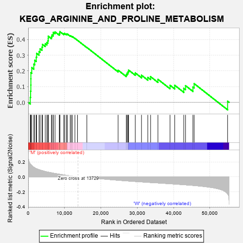
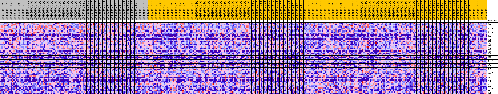
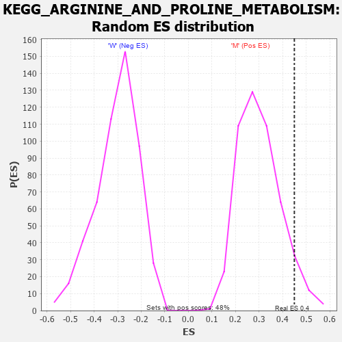

| Dataset | MUC16.MUC16.cls#M_versus_W.MUC16.cls#M_versus_W_repos |
| Phenotype | MUC16.cls#M_versus_W_repos |
| Upregulated in class | M |
| GeneSet | KEGG_ARGININE_AND_PROLINE_METABOLISM |
| Enrichment Score (ES) | 0.44980606 |
| Normalized Enrichment Score (NES) | 1.4882159 |
| Nominal p-value | 0.062111802 |
| FDR q-value | 0.20984626 |
| FWER p-Value | 0.781 |

| PROBE | DESCRIPTION (from dataset) | GENE SYMBOL | GENE_TITLE | RANK IN GENE LIST | RANK METRIC SCORE | RUNNING ES | CORE ENRICHMENT | |
|---|---|---|---|---|---|---|---|---|
| 1 | GOT2 | na | 570 | 0.175 | 0.0320 | Yes | ||
| 2 | ODC1 | na | 665 | 0.168 | 0.0710 | Yes | ||
| 3 | P4HA2 | na | 732 | 0.165 | 0.1097 | Yes | ||
| 4 | P4HA1 | na | 739 | 0.164 | 0.1493 | Yes | ||
| 5 | ALDH9A1 | na | 745 | 0.164 | 0.1889 | Yes | ||
| 6 | ALDH18A1 | na | 978 | 0.151 | 0.2212 | Yes | ||
| 7 | GLS2 | na | 1544 | 0.130 | 0.2425 | Yes | ||
| 8 | ALDH7A1 | na | 1791 | 0.122 | 0.2676 | Yes | ||
| 9 | GOT1 | na | 2211 | 0.111 | 0.2870 | Yes | ||
| 10 | NOS2 | na | 2321 | 0.109 | 0.3115 | Yes | ||
| 11 | ARG1 | na | 2979 | 0.097 | 0.3230 | Yes | ||
| 12 | LAP3 | na | 3275 | 0.092 | 0.3399 | Yes | ||
| 13 | CPS1 | na | 3788 | 0.085 | 0.3512 | Yes | ||
| 14 | PYCR2 | na | 3928 | 0.083 | 0.3687 | Yes | ||
| 15 | CKMT1A | na | 4696 | 0.073 | 0.3724 | Yes | ||
| 16 | PYCR1 | na | 5132 | 0.068 | 0.3809 | Yes | ||
| 17 | GATM | na | 5422 | 0.065 | 0.3913 | Yes | ||
| 18 | AMD1 | na | 5505 | 0.064 | 0.4053 | Yes | ||
| 19 | SMS | na | 5517 | 0.064 | 0.4205 | Yes | ||
| 20 | CKMT1B | na | 6404 | 0.055 | 0.4176 | Yes | ||
| 21 | GLUD1 | na | 6539 | 0.053 | 0.4281 | Yes | ||
| 22 | PRODH | na | 6894 | 0.050 | 0.4337 | Yes | ||
| 23 | ARG2 | na | 6916 | 0.050 | 0.4454 | Yes | ||
| 24 | AOC1 | na | 7388 | 0.046 | 0.4480 | Yes | ||
| 25 | SRM | na | 8571 | 0.036 | 0.4353 | Yes | ||
| 26 | NAGS | na | 8677 | 0.035 | 0.4420 | Yes | ||
| 27 | PRODH2 | na | 8716 | 0.035 | 0.4498 | Yes | ||
| 28 | ASS1 | na | 9780 | 0.027 | 0.4370 | No | ||
| 29 | ALDH3A2 | na | 10048 | 0.024 | 0.4381 | No | ||
| 30 | ASL | na | 10534 | 0.021 | 0.4343 | No | ||
| 31 | GLS | na | 10749 | 0.019 | 0.4351 | No | ||
| 32 | OTC | na | 11556 | 0.014 | 0.4239 | No | ||
| 33 | ACY1 | na | 11856 | 0.012 | 0.4214 | No | ||
| 34 | PYCR3 | na | 12160 | 0.010 | 0.4183 | No | ||
| 35 | AGMAT | na | 12852 | 0.005 | 0.4071 | No | ||
| 36 | OAT | na | 13576 | 0.001 | 0.3942 | No | ||
| 37 | SAT2 | na | 16143 | -0.006 | 0.3491 | No | ||
| 38 | ALDH4A1 | na | 24736 | -0.045 | 0.2044 | No | ||
| 39 | MAOA | na | 26995 | -0.054 | 0.1765 | No | ||
| 40 | P4HA3 | na | 27206 | -0.054 | 0.1859 | No | ||
| 41 | ALDH2 | na | 27469 | -0.055 | 0.1945 | No | ||
| 42 | DAO | na | 27632 | -0.056 | 0.2051 | No | ||
| 43 | AZIN2 | na | 29454 | -0.062 | 0.1872 | No | ||
| 44 | NOS1 | na | 31175 | -0.068 | 0.1724 | No | ||
| 45 | GAMT | na | 32906 | -0.073 | 0.1588 | No | ||
| 46 | GLUD2 | na | 33675 | -0.076 | 0.1632 | No | ||
| 47 | GLUL | na | 35697 | -0.082 | 0.1464 | No | ||
| 48 | NOS3 | na | 39025 | -0.092 | 0.1085 | No | ||
| 49 | CKMT2 | na | 40321 | -0.097 | 0.1084 | No | ||
| 50 | ALDH1B1 | na | 42802 | -0.105 | 0.0889 | No | ||
| 51 | CKM | na | 43288 | -0.107 | 0.1061 | No | ||
| 52 | CKB | na | 45316 | -0.115 | 0.0971 | No | ||
| 53 | SAT1 | na | 45648 | -0.116 | 0.1192 | No | ||
| 54 | MAOB | na | 54862 | -0.227 | 0.0073 | No |

